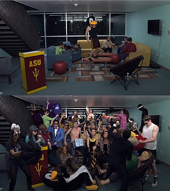
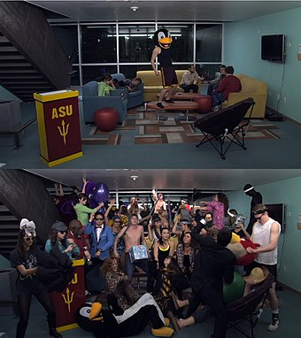

"One can now picture a future investigator in his laboratory. His hands are free, and he is not anchored. As he moves about and observes, he photographs and comments. Time is automatically recorded to tie the two records together. If he goes into the field, he may be connected by radio to his recorder. As he ponders over his notes in the evening, he again talks his comments into the record. His typed record, as well as his photographs, may both be in miniature, so that he projects them for examination."
"The scientist, however, is not the only person who manipulates data and examines the world about him by the use of logical processes, although he sometimes preserves this appearance by adopting into the fold anyone who becomes logical, much in the manner in which a British labor leader is elevated to knighthood. Whenever logical processes of thought are employed—that is, whenever thought for a time runs along an accepted groove—there is an opportunity for the machine. Formal logic used to be a keen instrument in the hands of the teacher in his trying of students' souls. It is readily possible to construct a machine which will manipulate premises in accordance with formal logic, simply by the clever use of relay circuits. Put a set of premises into such a device and turn the crank, and it will readily pass out conclusion after conclusion, all in accordance with logical law, and with no more slips than would be expected of a keyboard adding machine."


 
